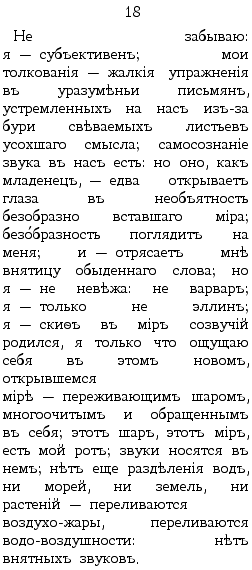
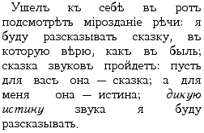

Glossolalia (Section 18)

I have not forgotten: I am -- subjective; my interpretations are -- pitiful exercises in the mind's comprehension of letters, which strove toward us out of a storm of blown off leaves of dried up meaning; there is a selfconsciousness of the sound within us: but it is like an infant, -- who has barely opened its eyes to the unembraceability of the imageless world arising before it; this imageless-formlessness stares at me; and -- shakes off to me the intelligibility of the everyday word; but I am-- not ignorant: not a barbarian; I'm-- just not a Helene; I'm -- a Scythian born into a world of consonance I just sense myself in this new world, which has revealed itself -- as one who has lived through the sphere, the multi-eyed and turned inside to itself; this sphere, this world, is my mouth; sounds are carried about in it; there is still no separation of the waters; no seas, no lands, no plants -- air-heats conflow: water-heats conflow; there are no intelligible sounds.

I retreated into my mouth to examine the universe of speech: I shall be telling a tale, in which I believe, like a true story of how it was; the tale of sounds shall pass before you: let it be for you -- a fairy tale; but for me it is -- truth; I shall be telling the crazy truth/the wild way it was of sound.